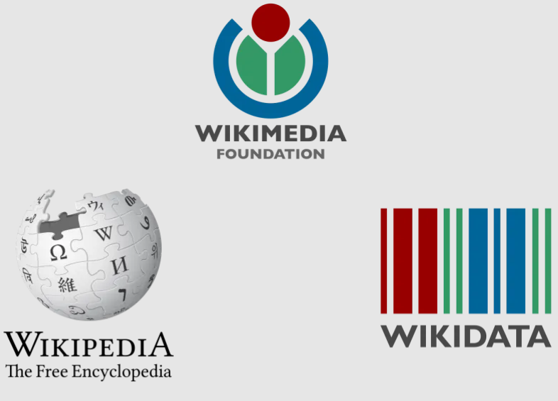

DataNER
DataNER is my masters' thesis project. It is a framework for automated dataset building for NER using Wikipedia and WikiData.
The code for the famework is available on Github.
Built in Python and bash shell code.

Junior Software Engineer specialized in data management and web dev skills.
I graduated in 2022 from a Masters' degree in Computer Science with a specialization in AI at Université de Montréal.
I'm now looking for work in the field of Data Science and Software and Data Engineering.
DataNER is my masters' thesis project. It is a framework for automated dataset building for NER using Wikipedia and WikiData.
The code for the famework is available on Github.
Built in Python and bash shell code.

Shift Tracker is an ongoing web and mobile app project to keep track of worked shifts in any relevant work environments, such as restaurants, nursing or the service industry.
The idea for this app came from my own experience working in restaurants and wanting to log my shifts.
Built in JavaScript using React Native.
> Click one of my skills !
> I've used Python for scientitic and data analysis purposes for more than three years now. I programmed my masters' thesis project in it.
> I have a good foundation in HTML, I've used primarily for personal websites and projects.
> Good foundations in CSS, I've used it to style personal web projects.
> Relatively new to JavaScript. I'm using this language for my web devs and mobile projects.
> I've used Git and GitHub for years now, for academic purposes. I'm comfortable with its basic use.